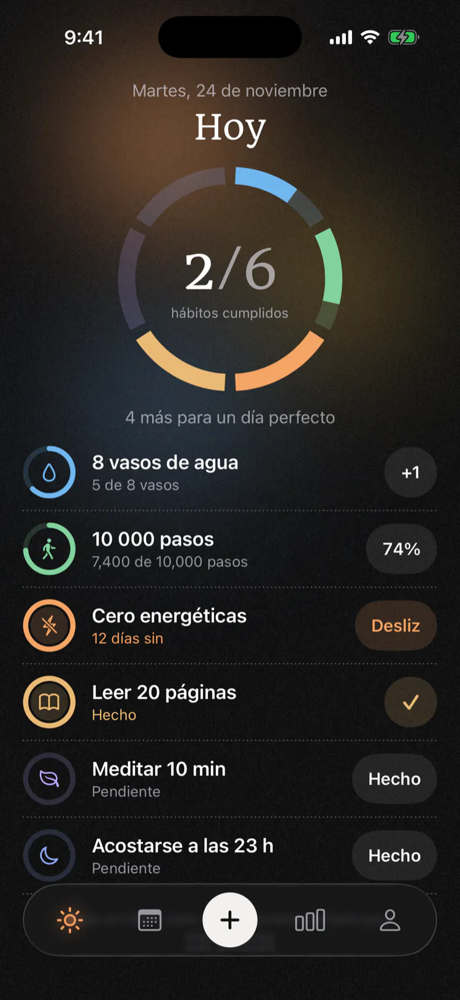

Coutume — Registro de hábitos para iPhone
Mantén tus hábitos, un día a la vez.
Los buenos por crear, los malos por dejar: un toque para anotar, y Salud cuenta tus pasos. Gratis, sin cuenta, sin anuncios y sin suscripción.

Toca un anillo y el día queda anotado.
Los hábitos de tu día, cada uno con su anillo. Un hábito que se cuenta, como 8 vasos de agua, suma uno con cada toque; mantén pulsado el anillo para introducir un número o deshacer.
Salud cuenta tus pasos por ti.
Los pasos, los minutos de ejercicio, la atención plena y el agua se anotan solos. Cada hábito guarda su racha y todo su historial.

Los malos hábitos, contados en días sin.
Un hábito por dejar se cumple por defecto: solo anotas el día que fallas. Coutume cuenta tus días sin, el dinero ahorrado y las ganas que resististe.

Niveles y logros por cada día cumplido.
Once niveles, de Buena intención a Leyenda, dieciocho logros que celebrar, y una racha que perdona un día perdido por semana.

Tu mes, día a día.
Un calendario de cada día, más vivo cuantos más hábitos cumpliste, y widgets para tu pantalla de inicio.

Todas las funciones.
Un toque
Toca el anillo y queda anotado
Salud
Tus pasos y tu agua se anotan solos
Por crear o por dejar
Anillos que llenar, días sin que contar
Rachas indulgentes
Un día perdido por semana, perdonado
Niveles
De Buena intención a Leyenda
Logros
Dieciocho por ganar y celebrar
Calendario
Tu mes, día a día
Widgets
Tus anillos en la pantalla de inicio
Sincronización con iCloud
Tus hábitos en tu iCloud privado
Gratis
Sin cuenta, sin anuncios, sin suscripción
Preguntas frecuentes.
¿Coutume es gratis?
Sí. Coutume es gratis, sin anuncios, sin suscripción y sin cuenta.
¿Necesito una cuenta?
No. Coutume funciona sin cuenta ni registro. Tus hábitos se guardan en tu iPhone y se sincronizan con tu iCloud privado, al que no tenemos acceso.
¿Cómo anoto un hábito?
Toca su anillo. Un hábito que se cuenta, como 8 vasos de agua, suma uno con cada toque; mantén pulsado el anillo para introducir un número o deshacer. Los pasos, los minutos de ejercicio, la atención plena y el agua pueden completarse solos desde Salud.
¿Cómo funcionan los hábitos por dejar?
Cada día cuenta como cumplido salvo que anotes un desliz. Coutume cuenta tus días sin, el dinero ahorrado y las ganas que resististe. Un desliz reinicia la cuenta, nunca tu mes ni tu nivel.
¿Y si me salto un día?
Tu racha perdona un día perdido por semana. Si fallas más, la racha vuelve a empezar, pero tu nivel y tus logros se quedan: cuentan cada día cumplido.
¿Qué lee Coutume de Salud?
Solo lo que autorices: pasos, minutos de ejercicio, atención plena y agua. Coutume nunca escribe en Salud, y tus totales se quedan en tu iPhone y en tu iCloud.
¿Y si cambio de iPhone?
Tus hábitos se sincronizan con tu iCloud y vuelven en tu nuevo iPhone, con todo su historial, sus niveles y sus logros.
¿Coutume está en español?
Sí. La app está en español, en inglés y en francés, y sigue el idioma de tu iPhone.
¿Coutume está en Android?
No. Coutume llega pronto a iPhone, en español, inglés y francés.
¿Más preguntas? Visita el soporte.
Guías.
- Alternativa a Streaks
Coutume frente a Streaks, la app de hábitos de pago para dispositivos Apple
- Alternativa a Habitify
Coutume frente a Habitify, la app de hábitos con planes gratis y de pago
- Alternativa a Habitica
Coutume frente a Habitica, la app de hábitos convertida en juego de rol
- Seguimiento de hábitos con Salud
Pasos, ejercicio, minutos de atención plena y agua, completados por Salud
- Dejar las bebidas energéticas
Cuenta tus días sin bebidas energéticas y el dinero que ahorras
- Dejar de vapear
Sigue tus días sin vapear, el dinero ahorrado y los impulsos resistidos
- Contador de días sin
Un contador de días sin para todo lo que quieras dejar
- Seguimiento de agua
Cuenta tus vasos de agua con un toque, o deja que Salud lo haga
- App de hábitos gratis
Gratis de verdad: sin suscripción, sin anuncios, sin cuenta
- Widget de hábitos
Los anillos del día en tu pantalla de inicio y tu pantalla bloqueada
- Ideas de hábitos
40 ideas de buenos hábitos por crear y malos por dejar
- Cuánto tarda un hábito
Lo que dice la investigación sobre el mito de los 21 días, y por qué un día perdido no importa
También te puede gustar.
- Reliure
Tu vida lectora, encuadernada
- Arpente
Cada paso cuenta una historia (próximamente)
- Porcom
Un pequeño diario de todo lo que ves
- Dernier Verre
Uno más, perfectamente mezclado (próximamente)
De los mismos creadores.
- Puuunch
Control de tiempo y hojas de horas para equipos pequeños.
- Makearesu.me
Crea un currículum en 5 minutos